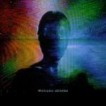
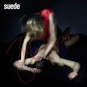
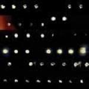
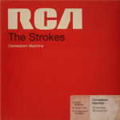

Music Reviews
-

Willy Moon Here's Willy Moon
Willy Moon, an awkward-looking New Zealander, who despite his youth, fully surrenders himself to classic rock 'n' roll (with a bit of hip-hop thrown in) might be the maddest potential pop-star of recent years. And hallelujah for that!
Mark Davison hasn't laughed so hard at a record in a long time... -

How to destroy angels_ Welcome oblivion
The first full-length album from How to destroy angels_ is themed around the overwhelming, all-consuming nature of advancing technology. The slow burn to humanity's oblivion is accompanied by strong electronic textures, creative rhythms and excellent vocal performances. However, the album could have been stronger musically and thematically if it was shorter.
Joe Marvilli looks at the singularity through Reznor's point-of-view.... -

Bleached Ride Your Heart
LA's Bleached land with a debut album on the back of promising singles influenced diversely from The Rolling Stones to The Replacements to Blondie. But can they combine these into a significant and original sound?
Matt Bevington reviews... -

Suede Bloodsports
Twenty years ago, Suede were the saviours of British music and the figureheads of an exciting, new musical movement. After years of decline, a triumphant return gig in 2010 has paved the way for a first album of new material since 2002.
As a fan, Joe Rivers was a bit nervous about this one... -

Woodkid The Golden Age
Woodkid delivers a nuanced and varied album that makes for a stellar beginning to his musical career.
John Grimley tries to remember he doesn't actually live in the Middle Ages... -
Marnie Stern The Chronicles of Marnia
Idiosyncratic and endearingly yelpy guitar hero Marnie Stern has become something of a No Ripcord favourite, it seems - and her fourth album doesn't disappoint.
Stephen Wragg reviews... -

Jerusalem In My Heart Mo7it Al-Mo7it
Montreal music scene mainstay Radwan Ghazi Moumneh's Jerusalem In My Heart sound, on paper, like a fascinating attempt to update traditional arabic culture by way of audio-visually rich performance pieces. But how will they translate to record?
Mark Davison really doesn't much care for the sound of Buzuks... -

The Strokes Comedown Machine
Once regarded as the "saviors of rock", the New York band continues their ongoing identity crisis, and still haven’t figured out how to advance their sound except to further their haphazard production values.
Juan Edgardo Rodríguez could play all the drum parts in Is This It... -

Pete Swanson Punk Authority EP
On his latest EP, Pete Swanson reaches into the abyss of wayward electronic noises and pulls out perhaps his most bizarre effort to date. But does this necessarily correlate with an enjoyable listening experience?
Andrew Ciraulo feels woozy and needs to lay down... -

William Tyler Impossible Truth
After years of playing with fellow alt-country bands Lambchop and Silver Jews, the Nashville native's second solo album serves as the folk soundtrack to an interstate drive down old route 66, encapsulating a love of the West and the country spirit.
Carlos Villarreal reviews...